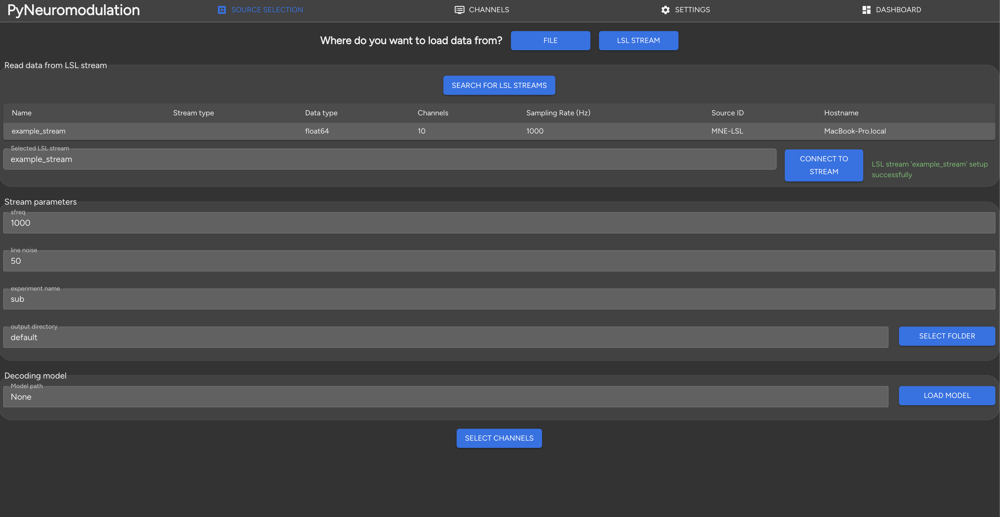
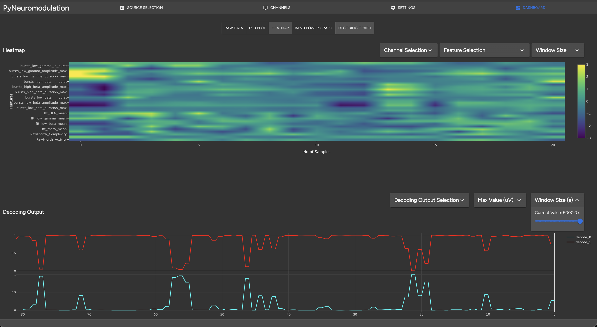

GUI#
In this section we will explain the setup and use of the py_neuromodulation GUI. First, the GUI dependencies are directly included in the default dependencies.
The GUI can be started after installing py_neuromodulation by running the following command:
run_gui
The run_gui command also starts a LabStreamingLayer stream from the py_neuromodulation/data/ example directory.
The GUI is a react application, that can then be accessed via the browser at the following address:
http://localhost:50001
- The GUI is divided into three main sections:
- Source selection: Data input which could be:
offline stored file, e.g. in mne.io.read_raw format or a simply .txt or .npy file
a LabStreamingLayer stream
channel selection: Definition of re-referencing, usage, target selection for the list of available channels
Feature selection: Choosing the features for computation with the corresponding parameters
The source selection is shown in the following image:
When clicking on the SELECT FILE button, a file dialog will open, where the user can select the file to be loaded:
Internally, available meta data such as sampling rate, line noise, available channel names will be read and a stream initialized. Alternatively, the user can select a LabStreamingLayer stream by clicking on the upper LSL STREAM button. The available streams will be shown in a menu:
Clicking on the row of the desired stream will initialize then a stream with the read sampling rate, channel names and default settings. A .skops decoding model, such as an openly-published movement decoding model can be loaded by clicking on the LOAD MODEL button.
Next, by selecting SELECT CHANNELS, the user is directed to the channel selection section:
Here the channel names, re-referencing, mne supported types and target selection can be defined. Next, by clicking on SETTINGS, the user is directed to the feature selection:

Here, many pre-processing, feature estimation and post-processing settings can be defined. The main settings
sampling rate features [Hz]
segment length features [ms]
are defined the upper left section. Additionally, frequency bands can be modified, added or deleted. Once the settings are modified, they are internally validated for potential errors which would then be displayed:
Once the settings are correct, the user can click SAVE & RUN STREAM to jump to the stream control and feature visualization panel. Here, different graphs can be selected by clicking on the corresponding graph list:
Raw data
PSD plot
Heatmap
Band power graph
Decoding graph
When clicking on RUN STREAM, the stream will start and the selected features will be computed in real-time. In the terminal the feature computation is logged, and features and raw signals are displayed in the GUI:
Additionally, a heatmap with selected features can be displayed with the decoded model output:
In the contributing section we explain in further detail the GUI setup.
Known issues#
Currently the GUI dashboard for live feature visualization is not fully functional with too many selected channels and PSD features. The websocket connection will then be broken off and no further features will be visualized, but the backend nm.stream will still be running, and raw data continued to be processed and saved.